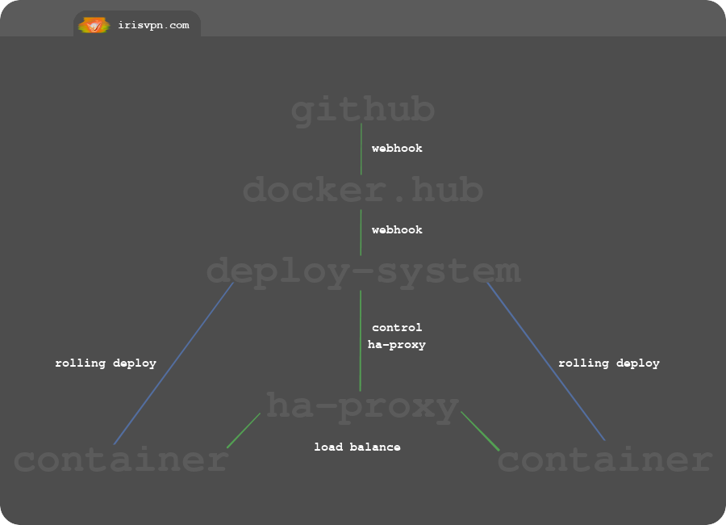

#automated deployment system
docker hub
Docker Hub will authorize with your Github account and monitor any repositories and branches you prefer. On a github push event Docker Hub will pull the code and start an image build.
You can use Docker Hub to store any build enviroment variables if you prefer.
Build commands can also be modified by creating a hooks directory in your code repo. You can also execute shell code before or after the docker build command.
$ cat hooks/build
#!/bin/bash
docker build -f $DOCKERFILE_PATH -t $IMAGE_NAME --secret id=rails,src=config/master.key .
--
$ cat hooks/pre_build
#!/bin/bash
echo "${RAILS_MASTER_KEY}" > config/master.key
Docker Hub can call your webhook to notify that an image has been build. And then that can trigger your deployment service.
Verifying that a request came from Docker Hub is an issue currently. Their feature is either failing or im not implemeneting it correctly. There must be something I'm missing! incoming page on webhooks.
Docker Hub has a Validate Webhook Callback fuction, its a callback URL included in the JSON, coming from the webhook. That callback URL accepts a POST request with a JSON body.
I'm asuming that fuction is to verify the payload came from Docker Hub?
exmaple callback URL: https://registry.hub.docker.com/u/svendowideit/testhook/hook/2141b5bi5i5b02bec211i4eeih0242eg11000a/
Sending a POST request to that callback URL does not return any, and if you modified that URL with bogus, it also does not return anything.
Im not sure what they are trying to do here. Normally a webhook is verified with a SHA1 hash included in the header. Hashing the payload + shared secret.
Similar issues:
Work around - Doing my own verification:
1. IP: (im sure IPs will not be static)
2. Trigger webhook from GitHub on push event, to deployment service. Notify that a build is about to start. (Not ideal - lots polling needed)
3. Everytime I get a callback, try pull the new image, if no new image exists then abort the deployment process.
deploy system
This manages & automates your infrastucture stack. HAproxy exposes a socket that allows this service to control the load balancer. For a new rolling deployment the service will:
Webhooks!
Webhooks allows you to integrate with 3rd party apps. You subscribe to an event that happens on there app, if the event is executed, they will notify your callback URL by sending a POST request to it. Now you do not have to constantly poll/call the 3rd party app to check for changes. Win-win
I'm not sure why they call it a webhook. Can not think of any hook anology that makes sense :Q? I know hooks are a common thing in software. I've used it in plugins to run some code when a event happens on the main app.